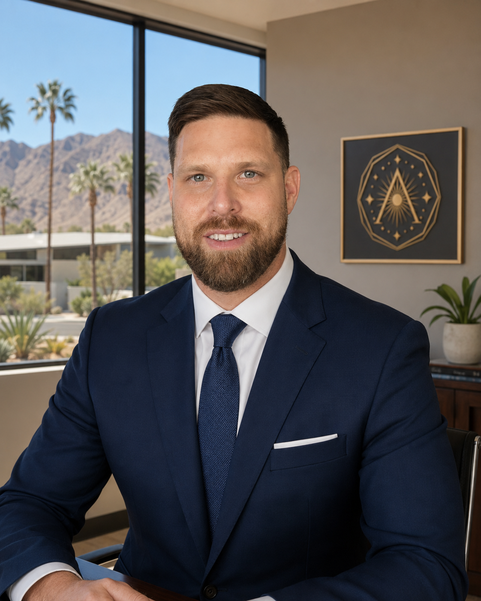
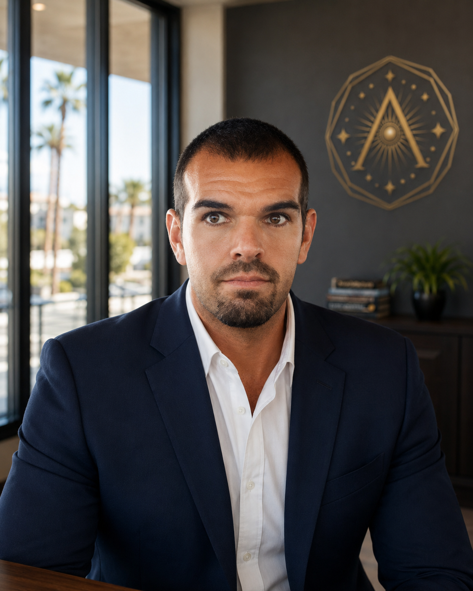

Leadership
Service grounded in responsibility.
Apotheosis Church distinguishes spiritual ministry from corporate governance. Each leader serves the Church’s religious mission through an identified and accountable role.
Ministry Leadership
Spiritual Director
Robert Delano Oliva Guilbault
Spiritual Director · Ordained Minister
Robert was ordained by Universal Life Church on January 4, 2017. He leads Apotheosis Church’s Saturday evening services, including readings, teaching, guided discussion, meditation, community reflection, and closing observance.
View ordination credential
Corporate Governance
Board and Officers

Michael Silberman
President and Director
Provides executive and administrative leadership and carries out policies approved by the board.
Jeffrey Perkins
Secretary and Director
Maintains the Church’s minutes, governing documents, notices, and corporate records.

Ralph Gonzalez
Treasurer and Director
Oversees financial records, budgets, receipts, and disbursement controls. Ralph also leads Two Worlds Outreach; he does not vote on Church decisions involving that organization.
Accountability
The board administers a written conflict-of-interest policy. Interested leaders disclose relevant relationships and abstain from decisions when required. Questions about leadership or governance may be directed through the contact page.